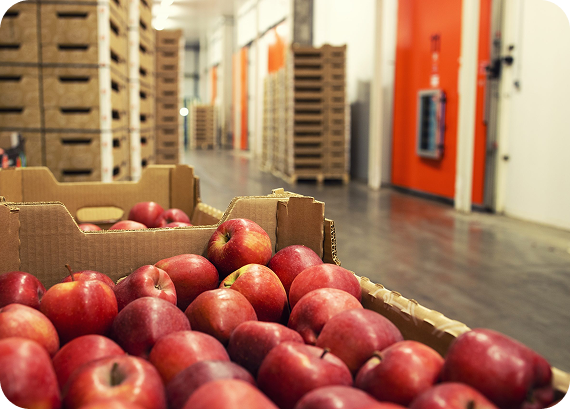

Solução IoT para o
armazenamento
de maçãs

Controle natural que preserva qualidade e o valor

Tecnologia que protege a sua produção
Nossa jornada
Nossa trajetória começou com a necessidade de entender e controlar um fator muitas vezes invisível, mas altamente impactante: o etileno. A partir desse desafio, desenvolvemos soluções tecnológicas capazes de monitorar e analisar ambientes de armazenamento com precisão. Nosso foco é transformar dados em decisões estratégicas, reduzindo perdas e aumentando a qualidade dos produtos. Com inovação e compromisso, buscamos tornar o processo de conservação mais eficiente, seguro e previsível. Seguimos evoluindo constantemente para atender às demandas do setor com excelência.

Inspirando Mudanças, Construindo Resiliência
Veja como nossas soluções podem ajudar empresas a reduzir perdas e alcançar melhores resultados.
Depois que começamos a monitorar o etileno, conseguimos reduzir significativamente as perdas no armazenamento. A qualidade das maçãs se manteve por muito mais tempo.
Carlos Mendes, Produtor Rural
A solução trouxe um nível de controle que não tínhamos antes. Hoje conseguimos tomar decisões com base em dados reais, o que fez toda a diferença.
Carlos Mendes, Produtor Rural
O monitoramento em tempo real facilitou muito nossa operação. A precisão dos dados ajuda a manter o ambiente sempre nas condições ideais.
Rafael Souza, Técnico Agrícola
Simule seu prejuízo em segundos
Descubra o quanto você pode estar perdendo no armazenamento.
Calculadora Financeira
O cálculo considera armazenamento refrigerado convencional (0–4°C, 90–95% UR, sem controle de etileno) durante 6 meses. Segundo artigos científicos da Embrapa e Acta Horticulturae (ISHS), com suporte da MDPI.
Custo por kg (R$)
Preço de venda por kg (R$)